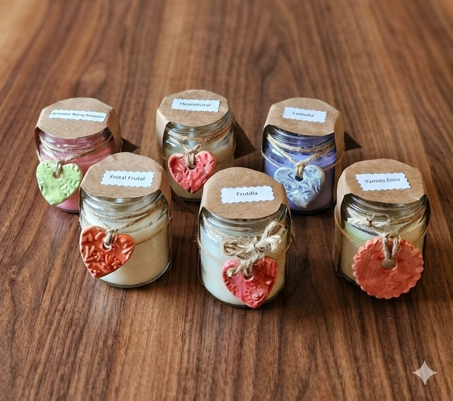
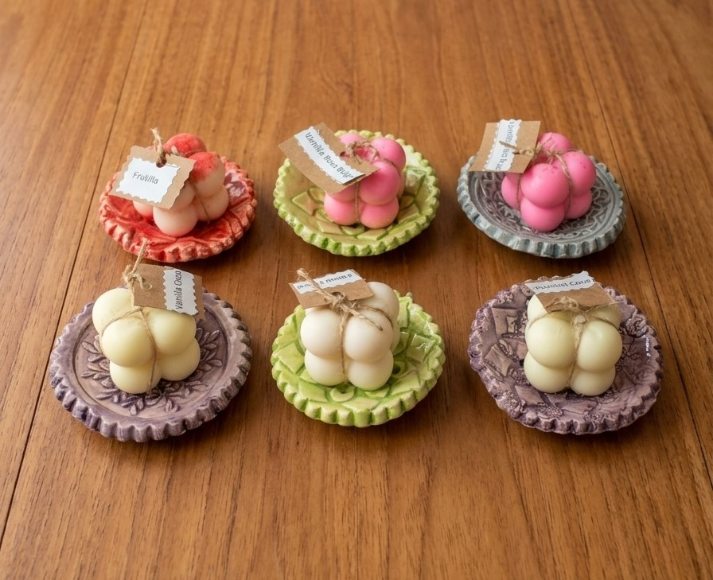

COLECCIÓN
Velas Artesanales
Velas hechas a mano.

Velas Aromáticas en Frasco con Dije
Velas de cera vegetal presentadas en frascos de vidrio con faja protectora de papel kraft e identificación de fragancia. Cada vela incluye un exclusivo dije de cerámica modelado y texturizado a mano atado con hilo de yute natural. Un detalle rústico y artesanal ideal para regalar o perfumar tus ambientes con variedad de aromas exquisitos.


Velas en Cuenco con Tapa Texturizada
Velas aromáticas de cera vegetal vertidas en cuencos de cerámica artesanal, acompañadas por una exclusiva tapa decorativa con textura y calado artesanal. Presentadas en envoltorio transparente con atado de yute y etiqueta, listas para regalar. Disponibles en tonos coral, salmón, gris y crema.

Mini Velas Bubble con Platito de Cerámica
Delicado set de mini vela aromática en forma de burbujas (*bubble*) acompañada por un platito porta vela de cerámica modelado y texturizado a mano. Incluye atado de hilo y etiqueta con su fragancia. Un detalle encantador para perfumar pequeños ambientes o regalar. Disponibles en variedad de aromas (Frutilla, Vainilla Coco, entre otros) y colores de plato.
![[Velas Aromáticas en Frasco]](img/velas/velas5.png)
![[Velas Aromáticas en Frasco]](img/velas/velas6.png)
Velas Aromáticas en Frasco
Velas artesanales elaboradas con cera vegetal en frascos de vidrio reutilizables, coronadas con una delicada flor moldeada a mano en la parte superior. Presentadas con tapa dorada y etiquetas en papel kraft personalizables con sello botánico, ideales para recuerdos de eventos, souvenirs o un regalo especial. Disponibles en varios colores y fragancias.